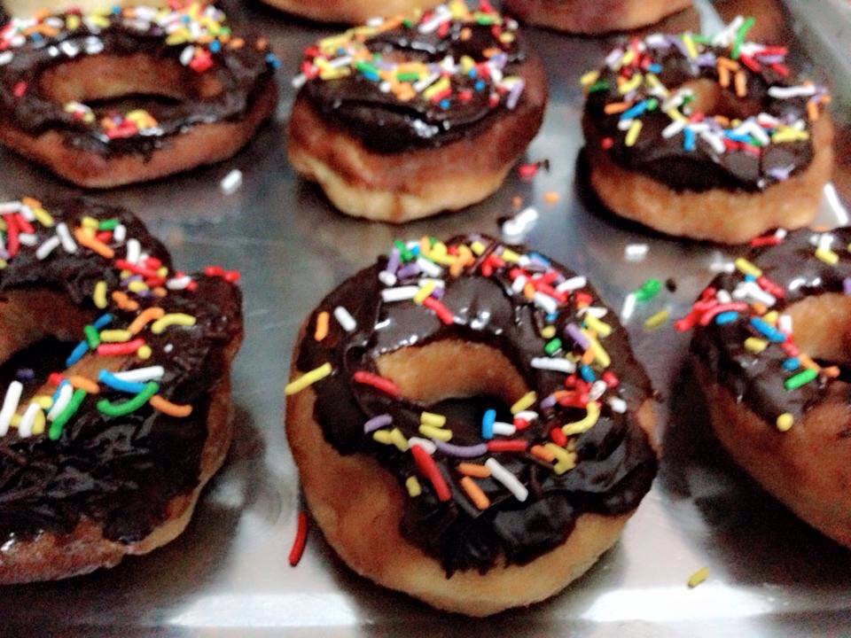

Bánh Donutlà một loại bánh ngọt rán hoặc nướng để ăn tráng miệng hoặc ăn vặt. Đây là loại bánh rất nổi tiếng và phổ biến ở nhiều đất nước phương Tây, có thể được mua trong cửa hàng hoặc tự làm ở nhà. Thường bánh có dạng hình vòng, nhưng cũng có thể có hình tròn nhỏ nhồi nhân bên trong. Bánh thường được phủ nhiều loại kem, socola và hạt đường trang trí.
Donut dùng ăn sáng với cà phê nóng, ăn tráng miệng hay ăn vặt đều được. Bánh được bán ở nhiều nơi, từ các tiệm bánh, nhà hàng hay tiệm tạp hóa, hoặc có thể tự làm ở nhà.
Hãy gọi ngay cho chúng tôi theo hotline 0967105331 để có những chiếc bánh Donut thơm ngon

Bánh donut socola : 15.000đ / 1chiếc
